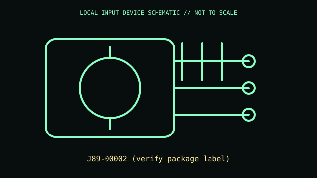

[ ADAPTIVE AND SWITCH-ACCESS CONTROLS // IDENTIFIED COMPONENT ]
Microsoft Adaptive Button
Single adaptive button accessory for a Microsoft Adaptive Hub, with replaceable/customizable top surface.

MODEL IDENTIFICATION: J89-00002 (verify package label). Confirm the printed SKU, revision, bundle, region, and included accessories before repair or compatibility claims.
Model specifications
| Catalog leaf | Adaptive and switch-access controls |
|---|---|
| Exact model / identifier | J89-00002 (verify package label) |
| Mechanism and primary specifications | Wireless button accessory pairing to Adaptive Hub; USB-C charging/wired accessory link; assigned host action depends on Hub profile and Microsoft Accessory Center configuration. |
| Compatibility and interface caveats | Confirm exact package model and button style; model suffix can differ among adaptive button variants. Requires Hub for documented PC mapping, not a direct standard HID keyboard. |
| Revision identification | Record the full label and software/firmware revision. Similar product-family names may use different protocols, components, connectors, or bundled accessories. |
Preservation and service
Keep personalized overlay/toppers with the unit and record its paired hub/profile. Charge and clean according to Microsoft guide, avoiding liquid on seams.
Separate observed condition and test setup from vendor-published specifications; record host OS, driver/app version, cables, adapters, and accessories.
Primary manufacturer sources
- Microsoft adaptive buttons instructionsManufacturer documentation; verify the exact SKU, revision, region, and accessories against the unit label.
- Microsoft Adaptive Hub guideManufacturer documentation; verify the exact SKU, revision, region, and accessories against the unit label.
Manufacturer support pages can change; retain the applicable manual and its revision in the physical equipment record.